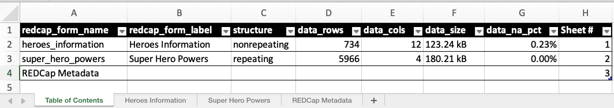
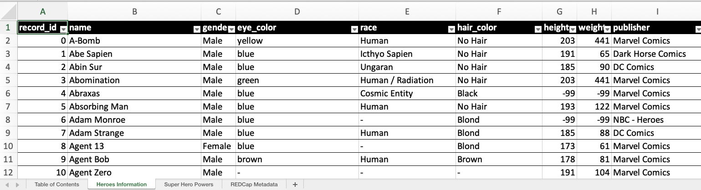
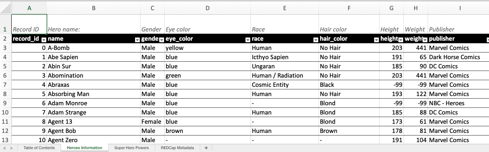

install.packages("REDCapTidieR")REDCapTidieR 0.4.0
REDCap
REDCapTidieR
R
REDCapTidieR v0.4.0 Release Announcement
We’re thrilled to announce the release of REDCapTidieR v0.4.0 on CRAN! REDCapTidieR provides a user-friendly way to import data from a REDCap project into the R environment.
This blog post will introduce you to two brand new features for exploratory data analysis and data exportation.
You can install the current version from CRAN with:
Get Metadata Summary Statistics üîé
The skimr package is a powerful tool allowing users to quickly get summary statistics of their data. REDCapTidieR now provides a simple function that will automatically apply the appropriate metrics to the supertibble metadata using add_skimr_metadata().
Let’s take a look at what this does using the internal superheroes_supertbl dataset by first re-acquainting ourselves with a typical supertibble:
library(REDCapTidieR)
library(dplyr)
superheroes_supertbl |>
rmarkdown::paged_table()Now, let’s apply our new function and observe some pre-selected metadata variables of interest in the redcap_metadata tibbles:
superheroes_supertbl |>
add_skimr_metadata() |>
select(redcap_metadata) |>
tidyr::unnest() |>
select(1, 2, 18:33) |>
rmarkdown::paged_table()In addition to the typical metadata columns, we now see a slew of new columns providing metadata statistics! add_skimr_metadata() will automatically detect and apply the appropriate metrics based on the REDCap metadata.
Curious about what metrics are available? You can find out more using skimr::get_default_skimmer_names() and check out the documentation.
Export Supertibbles to XLSX üìù
One of the most common mediums for data analysis and collaboration is the spreadsheet. With this update, you can now export your supertibble to Excel XLSX using the new write_redcap_xlsx() function. Let’s observe a couple of the output sheets:
superheroes_supertbl |>
write_redcap_xlsx("superheroes.xlsx")

By default, when opening the Excel document you’ll see multiple sheets. The first is the Table of Contents, followed by individual sheets for each instrument’s data, and ending with REDCap Metadata. The Table of Contents provides an overview of data present in the rest of the document while REDCap Metadata provides metadata for all fields from all instruments in one location. Each of these are optional and can be turned off if you only want the data sheets.
Labelled XLSX
As introduced in REDCapTidieR v0.2.0, the labelled package can still be used in your XLSX output files. By using the make_labelled() function, you can now integrate your labels into your Excel sheets:
superheroes %>%
make_labelled() %>%
write_redcap_xlsx("superheroes-labelled.xlsx") Observe how the first row now contains human-readable labels!
Recoding Logical Columns
By default, write_redcap_xlsx() will recode logical (TRUE/FALSE) columns into more human-friendly terms. This can be adjusted using the recode_logical argument:
superheroes %>%
write_redcap_xlsx("superheroes-labelled.xlsx")write_redcap_xlsx() uses the field label to decide how to recode logical fields:
- Columns derived from yesno fields are recoded from
TRUE/FALSEtoyes/no - Columns derived from checkbox fields are recoded from
TRUE/FALSEtoChecked/Unchecked - Columns derived from truefalse fields are left as is (
TRUE/FALSE)
Setting recode_logical to FALSE will preserve all logical fields as (TRUE/FALSE).